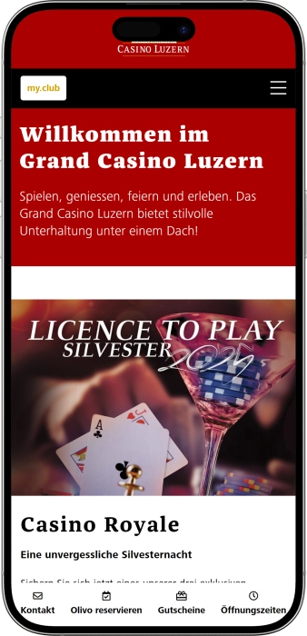

Exklusives Willkommensangebot von
Exklusives Willkommensangebot von
Grand Casino Luzern – Spiele, Shows & Restaurants am See
Top-Casino
Bonusdetails
Casino
Boni
Rate
Freispiele
Mehr Infos
Erhalten
Vorteile
-
Klassische Tische: Roulette, Blackjack, Baccarat, Ultimate Poker.
-
Grosser Slot‑Bereich mit Jackpots und Top‑Titeln.
-
Poker Circle: Cash Games und Turniere.
-
Touch‑Bet‑Terminals und elektronische Roulette.
-
Lage direkt an der Luzerner Seepromenade, zentral.
-
Restaurant Olivo: Terrasse, MICHELIN, mediterrane Küche.
-
Lizenziertes Online‑Casino mycasino.ch für die Schweiz, mit Boni.
- Täglich bis spät geöffnet, vom Bahnhof bequem erreichbar; moderater Eintritt ab 16:00, klarer Smart‑Casual Dresscode und sehr guter Service.
Grand Casino Luzern App


Über Grand Casino Luzern
- CHF 300 Willkommensbonus.
- 200 Freispiele ohne Umsatz.
- PCSO Preispool CHF 239’000.
Das Grand Casino Luzern liegt direkt am See und vereint Spiel, Gastronomie und Events unter einem Dach. Im Grand Jeu finden Sie klassische Tische wie Roulette, Blackjack, Baccarat und Ultimate Poker. Der Jackpot‑Bereich bietet eine breite Auswahl an Slots mit modernen Themen und spannenden Jackpots. Der Poker Circle steht für regelmässige Turniere und freundliche Cash Games in entspannter Atmosphäre. Das Restaurant Olivo begeistert mit mediterraner Küche und einer Panoramaterrasse über dem Wasser.

Belle‑Époque‑Interieurs sorgen für elegante Stimmung und historischen Charme. Ein klarer Smart‑Casual‑Dresscode und aufmerksamer Empfang erleichtern den Besuch. Die Anreise gelingt bequem mit dem ÖV, und Autofahrer nutzen das Parkhaus direkt neben dem Eingang. Das Casineum bietet Räume für Firmenanlässe und private Feiern. Die Online‑Plattform mycasino.ch ergänzt das Erlebnis mit sicherem Spiel und regelmässigen Aktionen.
Grand Casino Luzern: klassische Eleganz an der Seepromenade
Das Grand Casino Luzern empfängt seine Gäste im historischen Kursaal direkt an der Seepromenade. Belle‑Époque‑Interieurs, hohe Decken und der Blick aufs Wasser schaffen eine stilvolle Atmosphäre mit klassischem Charme und moderner Komfort‑Inszenierung; der Besucher‑Guide stellt den Abend klar unter das Motto «spielen, geniessen, feiern und erleben».
Die Gaming‑Flächen gliedern sich in Jackpot Casino (Slots von spätem Vormittag bis in die Nacht) und Grand Jeu (Tische ab späterem Nachmittag bis spät). Im Angebot sind American Roulette, Blackjack, Punto Banco/Baccarat, Ultimate Poker sowie elektronische Touch‑Bet‑Lösungen und eine breite Jackpot‑Auswahl; die Details finden Sie im Bereich «Spielen».
Kulinarisch überzeugt das Restaurant Olivo mit mediterraner Küche und Panoramaterrasse; als MICHELIN‑gelistetes Haus eignet es sich ideal für das Paket Dinner & Casino. Im Spielbereich stehen Bars bereit, um zwischen Einsätzen zu verweilen und das Geschehen an den Tischen aus der Cocktail‑Zone zu beobachten.
Die Lage ermöglicht eine bequeme Anreise mit dem ÖV (Busse ab Bahnhof bis «Casino‑Palace») und per Auto: Das Parkhaus Casino‑Palace bietet direkten Zugang zum Casino; in unmittelbarer Nachbarschaft liegen Premiumhotels wie das Grand Hotel National und das Mandarin Oriental Palace.
Für Events und Unterhaltung steht das Casineum mit eigenem Kalender bereit, von Themenabenden bis zu Privat‑ und Firmenanlässen; pokerseitig sorgt der Poker Circle mit regelmässigen Turnieren und Wochenend‑Cash Games für lebendige Action.
Die Bonus‑ und Loyalitätswelt ist zweigleisig gedacht: Online bietet mycasino.ch (die lizenzierte Plattform des Grand Casino Luzern) ein Willkommenspaket mit Bonus und Freispielen sowie regelmässige Aktionen bei gleichzeitigem Fokus auf Spielerschutz; offline belohnt der my.club Mitglieder mit persönlichen Vorteilen und speziellen Parkkonditionen.
Sprache, Zahlung & Wechsel: so läuft’s im Grand Casino Luzern
Im Grand Casino Luzern kommuniziert das Team primär auf Deutsch; Mitarbeitende im Front Office und Service sprechen zudem fliessend Englisch und häufig auch Französisch — entsprechende Sprachanforderungen sind in den aktuellen Stellenprofilen von Casino und Restaurant Olivo klar ersichtlich. Für den Online‑Ticketshop des Casinos stehen moderne, sichere Zahlungsarten bereit: TWINT, Apple Pay, Google Pay sowie gängige Kreditkarten wie Visa und Mastercard. Im direkt angebundenen Parkhaus Casino‑Palace werden Bargeld (inklusive Euro) und diverse Karten akzeptiert; mit ParkingPay und Ticket+ zahlen Sie kontaktlos, und vielerorts lässt sich Parkieren sogar via TWINT mit automatischer Nummernschilderkennung abwickeln — ideal für Gäste, die mit dem Auto anreisen. Für Bargeldbezug und Währungswechsel empfiehlt sich die City‑Lage rund um den Bahnhof: in Gehdistanz finden Sie etablierte Wechselstuben und Transfer‑Services (u. a. Ria, Western Union, Ecex), während die Tourist Information am Bahnhof kompetent zu nahegelegenen Services und Öffnungszeiten Auskunft gibt. Darüber hinaus steht Ihnen die Customer Care des Casinos zur Seite: Das Team informiert verständlich und professionell, unter anderem zu verantwortungsvollem Spiel und praktischen Anliegen rund um den Besuch — das erleichtert die Verständigung und sorgt für ein reibungsloses Erlebnis.
Besuchsregeln im Grand Casino Luzern: Dresscode, Zutritt & Anreise
Das Grand Casino Luzern ist täglich geöffnet; die Spielfläche gliedert sich in das Jackpot Casino (Slots) und den Grand‑Jeu‑Bereich (Tische), was die Abendplanung erleichtert. Der Zutritt zum Spielbereich ist ausschliesslich Gästen ab 18 Jahren mit gültigem Ausweis gestattet; die Identifikation erfolgt gemäss den gesetzlichen Vorgaben. Bis 16:00 ist der Eintritt frei, danach gilt eine moderate Gebühr inklusive Getränkefisch; Details sind im Besucher‑Guide und Hausreglement beschrieben. Der Dresscode lautet smart casual: gepflegte Freizeitkleidung ist willkommen, Sportbekleidung ist im Spielbereich nicht erlaubt; so bleibt die Atmosphäre stilvoll und einheitlich. Vor Betreten des Spielbereichs sind Überkleider, grosse Taschen und Rucksäcke an der Garderobe abzugeben; die Regel dient der Sicherheit und dem Komfort aller Gäste. Waffen, Tiere sowie technische Hilfsmittel, die einen Spielvorteil verschaffen könnten, sind verboten; die Direktion kann den Eintritt verweigern und Regeln durchsetzen. Foto‑ und Videokameras werden vor dem Spielbereich deponiert; Mitarbeitende dürfen Ausweise kontrollieren und Anweisungen erteilen, denen Folge zu leisten ist. Die Anreise gelingt bequem zu Fuss ab Bahnhof oder mit den Buslinien 6, 8, 24 sowie dem Nachtbus N3 bis «Casino‑Palace». Für Autofahrer steht das Parkhaus Casino‑Palace mit direktem Zugang bereit; akzeptiert werden Bargeld und Karten sowie mobile Zahlungen via ParkingPay/Ticket+, es gibt E‑Ladestationen und Parkfelder für Personen mit eingeschränkter Mobilität. Im Parkhaus gilt eine Einfahrtshöhe von 2,00 m; digital bezahlen lässt sich u. a. mit TWINT (teilweise mit Nummernschilderkennung). Aktuelle Öffnungszeiten und Regeln sind auf den offiziellen Seiten publiziert; ein kurzer Blick vor dem Besuch lohnt sich. Für Show‑ und Pokerabende empfiehlt sich der Blick in den Casineum‑ und Poker‑Kalender.
Dresscode & Stil
- • Smart casual ist erwünscht; Sportbekleidung ist im Spielbereich nicht erlaubt.
Zutrittsbedingungen
- • 18+ mit gültigem Ausweis (Pass/ID/Führerausweis).
- • Bis 16:00 freier Eintritt; danach gebührenpflichtig inklusive Getränkefisch.
Verbote & Sicherheit
- • Überkleider, Kameras sowie grosse Taschen/Rucksäcke werden vor dem Spielbereich deponiert.
- • Verboten sind Waffen, Tiere und Geräte für einen Spielvorteil; bei Verstössen kann der Eintritt verweigert werden.
Öffnungszeiten der Spielbereiche
- • Jackpot Casino (Slots) vom späten Vormittag bis Nacht; Grand Jeu (Tische) ab späterem Nachmittag bis spät (je nach Wochentag).
Anreise
- • Zu Fuss ab Bahnhof oder mit den Buslinien 6/8/24 und Nachtbus N3 bis «Casino‑Palace».
Parkhaus Casino‑Palace
- • Direkter Zugang, E‑Ladestationen, barrierefreie Parkfelder; Zahlung mit Bargeld, Karten, ParkingPay/Ticket+ und teils TWINT (Kennzeichenerkennung); Einfahrtshöhe 2,00 m.
my.club & mycasino: das Treueprogramm des Grand Casino Luzern
Das Treueprogramm des Grand Casino Luzern ist zweigleisig aufgebaut: my.club für Besuchende des landbasierten Casinos und mycasino.ch als lizenzierte Online‑Ergänzung für Spielende mit Wohnsitz in der Schweiz. my.club ist kostenlos; mit jeder Visite und jedem Spiel sammeln Sie Statuspunkte und profitieren — je nach Level — von exklusiven Jackpots, Member‑Events und Geschenken sowie von Vorteilen wie freiem Eintritt, Free‑Play‑Guthaben, reduzierten Park‑ und F&B‑Preisen. Online ergänzt mycasino.ch diese Vorteile mit Promotions und Free Spins. Für neue Spieler winkt ein Willkommenspaket 100 % bis CHF 300 + 200 Free Spins (in Tranchen und mit Bonusbedingungen), das sich problemlos mit einem Casinobesuch kombinieren lässt. Weitere digitale Goodies umfassen 99 Verifizierungs‑Free‑Spins, die Aktion «Bring a Friend» mit CHF 50 je Person, saisonale Verlosungen bis CHF 1 000 Bonusgeld sowie wöchentliche Angebote wie das «Game of the Week» mit bis zu 30 Free Spins. Bitte beachten: Online‑Aktionen gelten ausschliesslich in der Schweiz und unterliegen den T&Cs; my.club‑Benefits beziehen sich auf den Besuch im Grand Casino Luzern. Die aktuell gültigen Level‑Details und Aktionen finden Sie stets auf den offiziellen Seiten.
Registrierungsbedingungen (Offline & Online)
- • my.club (Casino): kostenlose Anmeldung am my.club‑Desk; Zutritt zum Spielbereich ab 18+ mit gültigem Ausweis.
- • mycasino.ch (Online): Konto für Schweizer Wohnsitz; Mindestdeposit CHF 10 für das Welcome‑Paket; KYC‑Check inkl. 99 Verifizierungs‑Free‑Spins.
Levelstruktur von my.club & Aufstieg
- • Fünf Benefit‑Level: Ihr Rang richtet sich nach Statuspunkten; je mehr Aktivität, desto schneller das Level‑Up innerhalb des my.club‑Jahres.
- • Punkte sammeln: Karte my.club am Slot einloggen bzw. bei Aktivitäten vorweisen; ab gewissen Schwellen schaltet das System exklusive Jackpots, Events und Geschenke frei. Konkrete Schwellen/Namen werden im offiziellen Flyer/FAQ kommuniziert und können angepasst werden.
Alle verfügbaren Boni & Vorteile
Offline (my.club im Casino)
- • Exklusive Club‑Jackpots, Verlosungen und Member‑Events.
- • Freier Eintritt und Free‑Play‑Gutschriften im Rahmen von Club‑Aktionen.
- • Reduzierte Parktarife im Casino‑Palace sowie F&B‑Vorteile vor Ort.
Online (mycasino.ch in der Schweiz)
- • Welcome‑Bonus: 100 % bis CHF 300 + 200 Free Spins (4×50; Free Spins ohne Umsatzbedingung, Bonus i. d. R. x35/30 Tage gemäss T&Cs).
- • Verifizierungsbonus: 99 Free Spins nach erfolgreicher Dokumentenprüfung.
- • Bring‑a‑Friend: CHF 50 je Person bei erfüllten Teilnahmebedingungen.
- • Verlosungen & Turniere: bis CHF 1 000 Bonusgeld monatlich in Lotterien; saisonale Specials.
- • Wöchentlich: «Game of the Week» mit bis zu 30 Free Spins; Birthday‑Bonuses mit Free Spins gemäss aktueller Aktion.
Softwareanbieter
Unterhaltung und Gaming im Grand Casino Luzern
Boni, Jackpots & saisonale Angebote im Grand Casino Luzern
Im Grand Casino Luzern erwartet Sie ein breites Spektrum an Spiel‑ und Entertainment‑Promotions: dynamische Live‑Jackpots im Slot‑Bereich, thematische Abende im Casineum sowie hochdotierte Poker‑Serien mit starkem Teilnehmerfeld. Die landbasierte Erlebniswelt wird vom legalen Online‑Casino mycasino.ch ergänzt — dort stehen Willkommenspaket, Wochen‑Promos und Verlosungen bereit; in Festzeiten laufen zusätzliche saisonale Specials (z. B. Adventskalender). Für genussvolle Abende empfiehlt sich das «Dinner & Casino»‑Paket mit fixem Preis und Spielchips, und am Eintritt gibt es eine kleine «Lucky Drink»‑Vergünstigung am späten Nachmittag. Im Eventkalender tauchen regelmässig Silvester‑Packages, Themen‑Shows, die Poker Circle‑Series und Specials mit erweitertem Programm auf.
Konkrete aktive Angebote
- • Welcome‑Bonus mycasino.ch: 100 % bis CHF 300 + 200 Free Spins; die Free Spins kommen in vier Tranchen à 50 ohne Umsatzbedingung, der Bonus hat i. d. R. x35 mit 30 Tagen Laufzeit.
- • Verifizierungsbonus: nach erfolgreicher KYC — 99 Free Spins.
- • «Bring a Friend»: je CHF 50 für Einladenden und Eingeladenen gemäss Aktionsbedingungen.
- • Wöchentliches «Game of the Week»: bis zu 30 Free Spins bei qualifizierter Aktivität.
- • Monatliche Verlosung mycasino: bis CHF 1 000 Bonusgeld pro Ziehung.
- • Poker Circle Swiss Open (offline): Preispool CHF 239’000; Sieger kassierte CHF 40’090, Highroller‑Gewinn CHF 13’500 (Beispiel aus jüngster Ausgabe).
- • «Dinner & Casino» (Olivo): fixes Package um CHF 98 inkl. Dinner und CHF 20 Spielchips.
- • Lucky Drink Chip beim Eintritt: ab 16:00 ist ein CHF 5 Getränk‑Chip im Eintritt enthalten (Eintritt vor 16:00 kostenlos, ohne Drink‑Chip).
- • Live‑Jackpots im Slot‑Bereich: Summen werden laufend in CHF aktualisiert; Anzeige auf den Screens und auf der Website (Zahlen schwanken, daher ohne fixe Beträge).
- • Saisonale Specials im Casineum: Silvester‑Packages «Casino Royale» und Themen‑Shows mit separaten Konditionen und Terminen.
Beliebte Spiele im Grand Casino Luzern: von Roulette bis Poker Circle
Das Spielangebot im Grand Casino Luzern teilt sich in Grand Jeu (Live‑Tische) und Jackpot Casino (Slots & elektronische Stationen) – ideal für Einsteigerinnen und Fortgeschrittene gleichermassen. An den Tischen erwarten Sie American Roulette, Blackjack, Punto Banco/Baccarat und Ultimate Poker (bank‑basierte Pokervariante), während im Slot‑Bereich ein breites Portfolio mit Jackpots läuft. Für ein hybrides Spielgefühl sorgen Touch‑Bet‑Terminals und elektronische Roulette‑Stationen, die mit einem realen Rad verbunden sind. In der Slot‑Bibliothek finden sich Klassiker wie Super Cherry, Book of Ra oder Thunder Cash; aktuelle Jackpots werden direkt in CHF angezeigt. Wer Poker bevorzugt, ist im Poker Circle richtig: Hier stehen regelmässige Turniere und Cash Games auf dem Programm, typischerweise am Freitag und Samstag abends. Der Bereich «Spielen» auf der Website liefert einen schnellen Überblick zu Spielen, Zeiten und anstehenden Events. Für Neulinge bieten die Teams am Tisch hilfreiche Erklärungen, sodass der Einstieg leichtfällt. Das Ergebnis: ein rundes «Alles‑unter‑einem‑Dach»‑Erlebnis mit Klassikern, Jackpots, Poker und modernen elektronischen Formaten.
Kurzbeschriebe der beliebtesten Spiele
- • American Roulette – schnelles Live‑Spiel mit vielfältigen Setzoptionen am Rad im Grand‑Jeu‑Bereich.
- • Blackjack – schlagen Sie den Dealer mit 21 Punkten; Double/ Split je nach Tischregeln.
- • Punto Banco / Baccarat – minimalistisches Setzen auf «Player» oder «Banker», hohe Spielkadenz.
- • Ultimate Poker – bankbasiertes Hold’em‑Format (ähnlich Ultimate Texas Hold’em) gegen das Haus.
- • Touch‑Bet / elektronische Roulette – persönliche Terminals am gemeinsamen Live‑Rad; ideal zum Angewöhnen.
- • Slots & Jackpots – «Super Cherry», «Book of Ra», «Thunder Cash» u. v. m. mit Bonus‑Features und Progressionen.
- • Poker Circle (Texas Hold’em) – Turnierkalender und Cash Games am Wochenende.
Mindest‑ und Höchsteinsätze im Grand Casino Luzern
Für eine schnelle Orientierung gilt: Bei Live‑Tischen (Grand Jeu) sind die Mindest‑/Maximaleinsätze direkt am jeweiligen Tisch angeschrieben, während an den elektronischen Multi‑/Touch‑Bet‑Terminals (Jackpot Casino) gewisse Limits vorgegeben sind. Die Roulette‑Seite des Casinos bestätigt explizit, dass die Limits an den American‑Roulette‑Tischen angeschrieben sind; bei Multi‑Roulette liegt der Mindesteinsatz bei CHF 1 und der Maximalbetrag auf „Straight‑Up“ bei CHF 100, weitere Einsatzarten haben eigene Grenzen und werden am Screen angezeigt. Für Blackjack, Punto Banco/Baccarat und Ultimate Poker nennt das Casino die klassischen Angebote; konkrete Einsatzbereiche variieren und sind am Tisch ersichtlich (siehe «Spielen»). Im Poker Circle laufen Cash Games jeweils Freitag/Samstag ab 20:00; Blinds werden nach Wunsch der Gäste festgelegt, daher gibt es keine einheitlichen Standard‑Limits. Im Slot‑Bereich hängen Einsätze vom jeweiligen Automaten ab; Live‑Jackpots und Spielparameter sind auf den Displays und im Bereich «Spielen/Live‑Jackpots» in CHF einsehbar.
| Spiel | Mindesteinsatz | Höchsteinsatz |
|---|---|---|
| American Roulette (live) | Am Tisch angeschrieben | Am Tisch angeschrieben |
| Multi‑/Touch‑Bet Roulette (elektronisch) | CHF 1 | CHF 100 auf «Straight‑Up» |
| Blackjack (live) | Am Tisch angeschrieben | Am Tisch angeschrieben |
| Punto Banco / Baccarat (live) | Am Tisch angeschrieben | Am Tisch angeschrieben |
| Ultimate Poker (banked) | Am Tisch angeschrieben | Am Tisch angeschrieben |
| Poker Cash Games (Texas Hold’em) | Nach Absprache (Blinds) | Nach Absprache |
| Slots / Jackpots | Automatenabhängig (am Display) | Automatenabhängig (am Display) |
Events & Nightlife im Grand Casino Luzern
Das Grand Casino Luzern vereint Spiel, Kulinarik und Entertainment; Dreh‑ und Angelpunkt der Nacht ist das historische Casineum. Der Abendablauf ist gestaffelt: zuerst Konzerte, Impro‑Theater, Stand‑up und Quizformate, später Club‑Nights mit DJs und Tanzfläche; Lounge‑/Galerie‑Reservationen mit Mindestkonsumation sind möglich. Üblicherweise laufen die Clubnächte Freitag/Samstag, mit zusätzlichen Terminen an Do/So.
Im Kalender erscheinen regelmässig Ü30 Popkeller Hit Party, Gran Caribe (Salsa/Bachata), Casino Comedy Club, Quiz Night sowie BFF — Birthday Friends Friday. Konzertseitig ergänzen Candlelight‑Reihen und Weekend‑Jazz das Programm; alle Formate sind im offiziellen Eventkalender aufgelistet.
Zu den saisonalen Highlights zählt die Mission Midnight‑Silvesterparty im Casineum, flankiert von den Casino Royale‑Paketen (Light/Premium/Deluxe) mit Einlass, Mitternachtsbuffet, Dinner im Olivo und Spielguthaben; Lounges lassen sich inklusive Mindestkonsumation buchen. Hinzu kommen genussvolle Specials wie La Dolce Vita Tavolata (italienischer Abend mit DJ & Weinbegleitung) und Showformate wie Burlesque; im Winter/Frühjahr ist die Super Bowl Party ein klassischer Fixpunkt.
Pokerfans freuen sich über die Poker Circle‑Festivals: über das Jahr verteilt finden PCSO‑Serien, das Autumn Festival und das X‑Mas Special statt; dazwischen laufen regelmässige Turniere und Cash Games
Parallel zur Clubnacht gibt es im Spielbereich Jackpot‑Aktionen (z. B. Cash Storm, Jingle Bells) sowie «Hot‑Seat»‑Promos — jeweils mit eigener Timing‑/Preisstruktur im Kalender.
Alle wichtigen Formate
- • Casineum Nightclub (Fr/Sa) — Hauptsaal + VIP‑Galerie; Club‑Nights nach Konzertblöcken; Lounge‑Reservationen möglich.
- • Ü30 Popkeller Hit Party — 80/90s & aktuelle Hits; oft mit Paket «Eintritt + Spielguthaben».
- • Gran Caribe (Salsa & Bachata) — wiederkehrende Latin‑Nacht mit DJ Theo; Termine im Kalender.
- • Casino Comedy Club — Stand‑up‑Format im Casineum.
- • Quiz Night — Team‑Quiz nach Programmplan.
- • Candlelight Concerts — kuratierte Kammerkonzerte (Adele/80er/Queen vs ABBA etc.) in der Venue.
- • Mission Midnight (Silvester) — NYE‑Party im Casineum + Casino Royale‑Pakete (Dinner/Spielguthaben).
- • Burlesque Shownight — Ticketverkauf via Ticketshop.
- • Super Bowl Party — Grossbild‑Viewing mit Event‑Ticket.
- • La Dolce Vita Tavolata — italienische Tavolata mit DJ & Weinbegleitung.
- • Poker Circle (PCSO/X‑Mas/Autumn) — Festivalserien mit Satellites & Side‑Events.
- • Cash Storm / Jingle Bells — saisonale Jackpot‑Promos im Slot‑Bereich.
Bars, Restaurants & Hotels rund um das Grand Casino Luzern
Kulinarik. Im Zentrum steht das Restaurant Olivo mit mediterraner Küche und Seebalkon; dazu kommen die Dinner & Casino‑Pakete (Aperitif, Menü, Spielchips), inkl. Royale mit 5‑Gänge‑Menü. Im Sommerbetrieb öffnet die Seeterrasse Restaurant Dolce Vita: täglich von März bis Oktober – leichte Küche, Aperitif‑Platten, Desserts direkt an der Uferpromenade.
Bars im Spielbereich. Im Casino stehen zwei Bars bereit: Grand Jeu Bar (Live‑Tischbereich) und Jackpot Bar (Slots) mit klaren Öffnungszeiten; zudem wird ausserhalb des Spielbereichs ein separater Cocktail Bar erwähnt. Wer ohne Eintritt die Stimmung testen will, kann gemäss Besucher‑Guide im Cocktail Bar einen Drink mit Blick auf den Spielbereich geniessen.
Hotels nebenan. Direkt neben dem Casino liegen zwei Luxusadressen: Grand Hotel National (Haldenstrasse 4) – Vorfahrt zwischen dem Casino und dem Hotel; sowie Mandarin Oriental Palace, Luzern (Haldenstrasse 10) – ein Belle‑Époque‑Wahrzeichen mit Zimmern, Suiten und mehreren Restaurants. Beide Häuser sichern bequeme Anreise und Komfort; Details zu Erreichbarkeit/Service sind auf den offiziellen Kontakt‑/Buchungsseiten ersichtlich.
Nightlife. Für Abend‑ und Nachtformate sorgt das Casineum: Konzerte, Comedy, Club‑Nights Fr/Sa, dazu Lounge‑/Galerie‑Reservationen mit Mindestkonsumation.
Alle Relax‑Spots
- • Restaurant Olivo (MICHELIN) – mediterran, Seebalkon; Dinner & Casino‑Pakete.
- • Restaurant Dolce Vita (saisonal) – Uferterrasse; März–Oktober, 12:00–23:00, leichte Karte & Aperitifs.
- • Grand Jeu Bar – Bar im Live‑Tischsaal; Start ab 17:30.
- • Jackpot Bar – Bar im Slot‑Bereich; ab 13:00, am Wochenende ab 11:00.
- • Cocktail Bar (ausserhalb) – Drinks mit Blick in den Spielbereich ohne Eintritt.
- • Casineum – Konzerte & Clubbing; Lounge‑/Galerie‑Reservierungen.
- • Grand Hotel National (5★) – historische Nachbarschaft zum Casino; Valet‑Parking, ÖV‑nah.
- • Mandarin Oriental Palace, Luzern (5★) – ikonisches Haus mit Seelage & Restaurants/Bars.
FAQ
Im Grand Jeu gilt in der Regel first‑come, first‑served; das Casino bietet jedoch Private Spielerklärungen für kleine Gruppen sowie Play & Sip / Play, Sip & Dip‑Pakete auf Reservation. Für Poker‑Cash Games erfolgt die Platzreservation telefonisch/WhatsApp an den Cash‑Abenden (Fr/Sa ab 20:00).
Im Casino‑Palace stehen zwei extra breite Behindertenparkfelder (P1), E‑Ladestationen und überdachte Veloständer bereit; maximale Einfahrtshöhe 2 m. Es besteht Direktzugang zum Casino.
Zutritt ab 18+ nur mit gültigem Pass/ID/Führerausweis; gemäss AML‑Pflichten der ESBK werden Kerndaten des Ausweises erfasst/kopiert und bei gewissen Transaktionsschwellen ergänzt — ausschliesslich zu Identifikationszwecken und unter Datenschutz. Das Grand Casino Luzern erläutert öffentlich seine GoodPriv@cy®‑Policy; im Online‑Casino (mycasino) kommt eine zertifizierte KYC‑Lösung zum Einsatz.
Gewinne in landbasierten Schweizer Casinos sind einkommensteuerfrei (ausser bei gewerblicher Tätigkeit). Für Online‑Gewinne gilt eine Steuerfreigrenze bis CHF 1 Mio.; darüber können kantonale/föderale Regeln greifen.